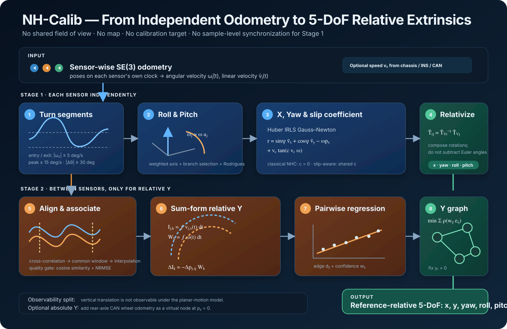

Roll & pitch
The dominant angular-velocity axis is the motion-plane normal expressed in the sensor frame.
NH-Calib turns each sensor's own odometry into a reference-relative five-degree-of-freedom calibration. It deliberately separates what one sensor can observe alone from what requires motion association between sensors.

Read left to right. Stage 1 estimates roll, pitch, x, and yaw independently for every sensor; Stage 2 estimates the remaining relative y through pairwise segment integration and graph consistency.
Planar wheeled motion does not expose every extrinsic component in the same way. NH-Calib therefore avoids a single monolithic solve and assigns each component to the motion constraint that actually observes it.
The dominant angular-velocity axis is the motion-plane normal expressed in the sensor frame.
The lateral-velocity constraint exposes yaw misalignment and the longitudinal lever arm.
Different arc lengths over the same turn expose the relative lateral lever arm.
Locally planar vehicle motion does not provide the vertical excitation needed to observe vertical translation. The output is therefore a five-degree-of-freedom relative extrinsic: x, y, yaw, roll, and pitch.
| Quantity | Primary evidence | Needs another sensor? | Clock-offset sensitivity |
|---|---|---|---|
| Roll, pitch | Sensor-local angular-velocity axis | No | None across sensors |
| X, yaw | Sensor-local leveled planar twist under NHC | No | None across sensors |
| Relative y | Integrated displacement difference over a shared turn | Yes | Reduced by common-window integration |
| Z | Not excited by the planar-motion model | — | Unobservable |
For sensor j, the input is a time-ordered SE(3) pose sequence on that sensor's own clock. Pose increments are converted into sensor-frame angular velocity ω̃j(t) and linear velocity ṽj(t).
Each LiDAR or radar may use its own odometry backend. Sensors do not need overlapping fields of view because their point clouds are never registered to one another.
The reported experiments interpolate chassis, INS, or CAN forward speed to sensor timestamps. Setting the slip coefficient c to zero recovers the classical non-holonomic constraint.
Find sufficiently strong, direction-consistent rotational segments.
Use the representative rotation axis to recover roll and pitch.
Robustly estimate yaw, x, and shared slip coefficient c.
Compose every estimate with the inverse reference-sensor pose.
Yaw rate supplies both the segment boundaries and the excitation test. Weak noise crossings are removed before any calibration residual is formed.
Under locally planar motion, valid angular-velocity vectors are collinear. NH-Calib sign-aligns them, computes a magnitude-weighted representative axis, selects the 180-degree branch consistent with a coarse mounting orientation, and uses Rodrigues rotation to align it with the vertical axis.
After motion-plane alignment, yaw ψj rotates the sensor twist into vehicle axes. The lateral sensor velocity contains the x lever-arm term induced by yaw rotation. A shared coefficient c absorbs speed-dependent tire slip.
The independently estimated per-sensor poses are converted to a reference-relative form. Rotations are composed as matrices instead of subtracting Euler angles.
If q̂j = qj + bcommon + εj, reference-relative conversion removes bcommon to first order and leaves εj − εr.
A single sensor cannot separate its forward velocity from the common platform speed. Relative y is therefore the only component that requires two sensors—but it is estimated over whole turning segments, not by fragile frame-wise subtraction.
Cross-correlate yaw-rate signals and associate corresponding turns.
Intersect segment intervals and interpolate exact common boundaries.
Fit the arc-length difference against accumulated heading.
Reconcile all pairwise edges into one consistent sensor layout.
For each associated turn, the common interval starts at the latest sensor start time and ends at the earliest sensor end time. Motion is linearly interpolated at both boundaries. Cosine similarity and NRMSE reject incompatible sensor–segment combinations.
Each sensor integrates forward velocity over the identical window. Sensors with different lateral offsets travel concentric arcs, so their displacement difference is proportional to the same accumulated heading.
Each sensor is a node. Pairwise regression supplies an edge measurement dij and confidence wij. Fixing the reference at yr = 0 removes the gauge freedom; robust optimization suppresses unstable edges and cycle inconsistency.
Stage 1 contributes x, yaw, roll, and pitch. Stage 2 contributes graph-integrated relative y. Together they form T̂rj for every target sensor j with respect to the selected reference sensor r.
The sequence contains repeated turns with sufficient angular rate and heading change.
Weak rotation makes the motion-plane axis, lever arms, and sum-form slope poorly conditioned.
Persistent banking, heave, or suspension motion violates the locally planar approximation and can bias the estimate.
{kind=link}